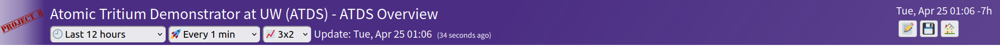
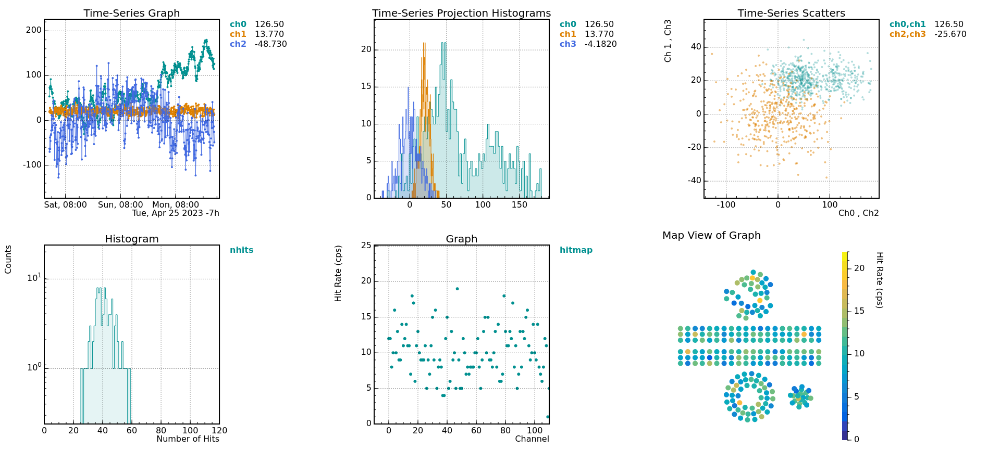
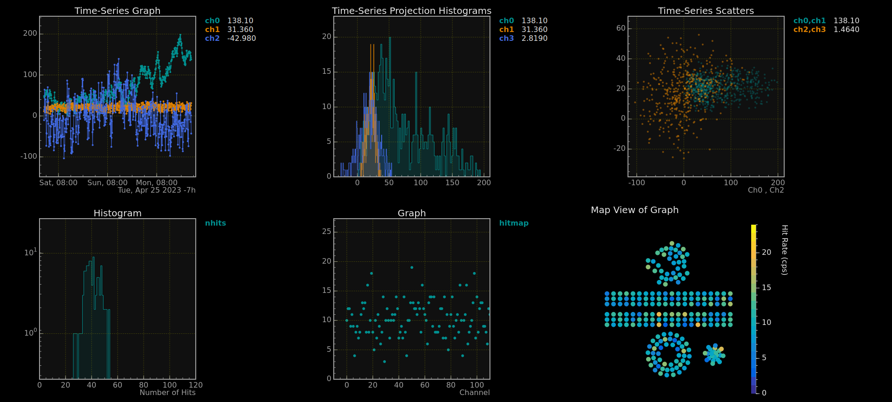
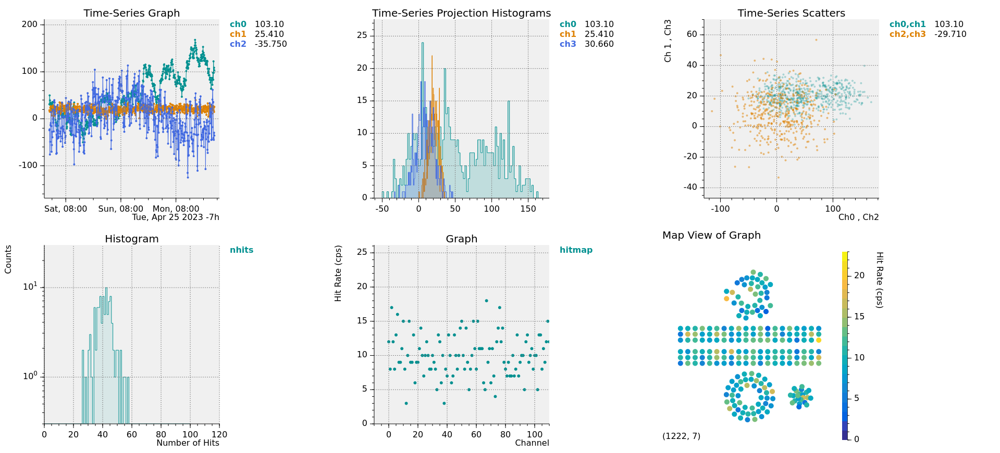

Every project has a dedicated project directory.
The configuration file is SlowdashProject.yaml,
placed at the project directory.
Project directory is specified at run time by one of the following:
--project-dir optionSLOWDASH_PROJECT environmental variableUnder the project directory, the config directory is
automatically created. The web interface posts files only to this
directory.
The project configuration file describes:
Example:
slowdash_project:
name: ATDS
title: Atomic Tritium Demonstrator at UW (ATDS)
data_source:
type: PostgreSQL
url: p8_db_user:****@localhost:5432/p8_sc_db
time_series:
schema: data_table[channel]@timestamp=value
style:
theme: light
title:
color: white
background: "#4b2e83"
system:
file_mode: 0666data_source, often necessary)type: type of user data store. Common ones are:
PostgreSQL, MySQL,
SQLiteInfluxDBRedisMongoDBCouchDBYAMLtask,
optional)style,
optional)See Styles below.
system,
optional)file_mode (default ’0644`): Access mode of
configuration files uploaded from Web clientsfile_gid: Group ID of configuration files uploaded from
Web clientsour_security_is_perfect: set true to
enable Python script uploading; be extremely careful to use thisauthenticate, for special purposes)See Security Considerations below.
module,
optional)Values in SlowdashProject.yaml can use variable and
command substitutions. The syntax is basically the same as
docker-compose:
${VARIABLE} for substitution with environmental
variable${VARIABLE:-DEFAULT} with default when the variable is
undefined or the value is empty${VARIABLE-DEFAULT} with default when the variable is
undefined$(COMMAND) for substitution with shell command
execution result$$ for literal $environment entry to define variables, either as a dict
or an arrayExample:
environment:
- BASE=${HOME:-/home/slow}/project
- DB=sqlite:///${BASE}/SlowStore.db
data_source:
url: ${DB}theme (default light): currently
light or darktitle:
color: title text color (default
white)background: title bar background (default
#4b2e83)logo:
file: file name of the logo image, stored under the
project config directory.position: left or rightbackground: background color (default
none)link: URL to open when the logo is clickedpanel:
plotGridEnabled, plotTicksOutwards:
true or falseplotBackgroundColor, plotMarginColor,
plotFrameColor, plotLabelColor,
plotGridColorplotFrameThickness: default 2negate: list of image files used in canvas, the colors
of which are to be negated (for dark mode) style:
title:
background: linear-gradient(125deg, rgba(75,46,131,1), rgba(75,46,131,1), rgba(75,46,131,0.9))
logo:
file: P8_Logo_2017.png
position: left
background: linear-gradient(90deg, rgba(255,255,255, 0.6), rgba(255,255,255, 0.4), rgba(255,255,255, 0))
The background property takes CSS “background” values /
expressions. See, e.g.,
a
Mozilla document for some examples.
The logo file(s) must be placed under the project’s
config directory.

style:
theme: dark
style:
panel:
plotTicksOutwards: true
plotFrameThickness: 0
plotBackgroundColor: "#f0f0f0"
plotGridColor: gray
Running the slowdash command without the
--port option takes parameters from the arguments and
prints output to screen. Run the command at the same directory as the
configuration file is located.
$ slowdash config
{
"project": {
"name": "ATDS",
"title": "Atomic Tritium Demonstrator at UW (ATDS)",
"error_message": ""
},
...
}$ slowdash channels
23-03-22 12:48:34 INFO: loaded datasource module "datasource_SQLAlchemy"
[
{"name": "sccm_Alicat_Inj_Gas"},
{"name": "mbar_CC10_Inj_Gas"},
{"name": "mbar_IG_Vac_MS"},
{"name": "degC_RTD1_Acc_AS"},
{"name": "degC_RTD2_Acc_AS"},
...$ slowdash 'data/sccm_Alicat_Inj_Gas?length=60'
23-03-22 12:50:20 INFO: loaded datasource module "datasource_SQLAlchemy"
{
"sccm_Alicat_Inj_Gas": {
"start": 1679514341, "length": 60,
"t": [2.364, 12.364, 22.355, 32.366, 42.364, 52.362],
"x": [-0.015, -0.014, -0.014, -0.015, -0.014, -0.016]
}
}When the argument includes a special character of the shell (such as
? and &), quote the entire argument.
WARNING: SlowDash is designed for internal use within a secured network, and therefore, no security protection is implemented. It is strongly recommended that you do not expose the system to the public internet. External access is assumed to be done through VPN or ssh tunnel.
Docker container images are available on DockerHub and GitHub Container Registry:
slowproj/slowdash:TAGghcr.io/slowproj/slowdash:TAGOr, to build a container locally, run
docker build -t slowdash at the slowdash source
directory:
$ git clone https://github.com/slowproj/slowdash.git --recurse-submodules
$ cd slowdash
$ docker build -t slowdash .The SlowDash container image is configured to have a project
directory at /project and open a port at
18881. Map the volume and port accordingly.
$ cd PATH/TO/SLOWDASH/PROJECT
$ docker run -p 18881:18881 -v $(pwd):/project REPO/slowdash:TAGFirst write docker-compose.yaml at your project
directory.
version: '3'
services:
slowdash:
image: REPO/slowdash:TAG
volumes:
- .:/project
ports:
- "18881:18881"$ docker compose up$ slowdash --project-dir=PROJECT_DIR --port=18881--project-dir can be omitted if:
SLOWDASH_PROJECT environment variable is set, orslowdash command is launched at the project directory.
slowdash process must keep running while accepting
the Web requests. For this, a terminal multiplexer, such as “tumx” or
“GNU Screen” would be useful.SlowDash can be executed as a CGI or WSGI module of the Apache web server.
enabled_for_cgi parameter true in the
module configuration. Be careful of all the side effects, including
performance overhead and security concerns.WSGI does not have these issues, but be cautious with the number of processes that WSGI launches. If user modules are used, setting the number of WSGI processes to one would be safe. Do not use multi-threading in WSGI processes (set the number of threads to one).
mod_wsgi for WSGIThere is a setup script in slowdash/utils. Run this
script at the project directory:
$ cd PATH/TO/PROJECT
$ PATH/TO/SLOWDASH/utils/slowdash-setup-apache.py --interface=CGI (or --interface=WSGI)To set up CGI, run the script with the --interface=CGI
option. It will install a set of files under the user’s public web
directory (typically /home/USER/public_html), and display
messages like:
=== INSTALLATION IS SUCCESSFUL ===
- To setup SLOWDASH CGI for another project, set SLOWDASH_PROJECT and run this program.
- It is safe to run this slowdash-setup-cgi.py multiple times, even for the same project.
- CGI can be disabled by deleting the CGI directory.
- Disabled CGI can be re-enabled by running this program again.
- Web-file directory for this project: /home/sanshiro/public_html/SlowDash/MySlowSystem
=== Apache configuration (CGI) ===
- Install Apache2.
- Enable cgi, userdir, rewrite, and headers modules by:
$ sudo a2enmod cgid userdir rewrite headers
- Edit /etc/apache2/mods-enabled/userdir.conf to allow overriding.
- Restart Apache by:
$ sudo systemctl restart apache2CGI requires a proper setting of the Apache web server as shown in the output above. Follow the displayed instructions (modify as needed) if not done previously.
The script places an Apache user directory configuration file
(.htaccess) with contents like:
DirectoryIndex slowhome.html
AddType text/javascript .mjs
Options +ExecCGI
AddHandler cgi-script .cgi
RewriteEngine On
RewriteRule ^api/(.*)$ slowdash.cgi/$1For a SlowDash CGI setup in a different way, mind that it requires URL rewriting.
To set up WSGI, run the script with the --interface=WSGI
option. It will install a set of files under the user’s public web
directory (typically /home/USER/public_html), and display
messages like:
=== INSTALLATION IS SUCCESSFUL ===
Public HTML directory for this project is: /home/sanshiro/public_html/SlowDash/MySlowSystem
- To setup a public HTML for another project, set SLOWDASH_PROJECT and run this program.
- It is safe to run this program multiple times, even for the same project.
- Public HTML can be disabled by deleting the HTML directory.
- Disabled public HTML can be re-enabled by running this program again.
=== Apache configuration (WSGI) ===
- Install Apache2.
- Install mod_wsgi by something like:
$ sudo apt install libapache2-mod-wsgi-py3
$ sudo yum install mod_wsgi
$ brew install mod-wsgi
- Enable wsgi, userdir, rewrite, and headers modules by:
$ sudo a2enmod wsgi userdir rewrite headers
- Add the following lines to /etc/apache2/apache2.conf for WSGI daemon:
WSGIDaemonProcess slowdash_MySlowSystem_wsgi processes=5 threads=1 home=/home/sanshiro/public_html/SlowDash/MySlowSystem
WSGIProcessGroup slowdash_MySlowSystem_wsgi
WSGIApplicationGroup %{GLOBAL}
- Restart Apache by:
$ sudo systemctl restart apache2WSGI requires a proper setting of the Apache web server as shown in the output above. Follow the displayed instructions (modify as needed) if not done previously.
The script places an Apache user directory configuration file
(.htaccess) with contents like:
DirectoryIndex slowhome.html
AddType text/javascript .mjs
Options +ExecCGI
AddHandler wsgi-script .wsgi
RewriteEngine On
RewriteRule ^api/(.*)$ slowdash.wsgi/$1Although a dedicated daemon is created for this SlowDash project, currently only one WSGI can be set up on one host. The other SlowDash project must use CGI.
Having an external Web server, such as Nginx or Apache, is often useful for:
/slowdash instead of :18881)When setting up a reverse proxy, be aware that
/ws, which often needs
dedicated routingFor a setup with Docker Compose, examples can be found in the
ExampleProjects/ReverseProxy directory.
This is the reverse proxy part of Nginx configuration, including WebSocket and considering Long Poll.
server {
location /slowdash/ {
proxy_pass http://SLOWDASH_HOST:18881/;
proxy_http_version 1.1;
proxy_set_header Upgrade $http_upgrade;
proxy_set_header Connection "upgrade";
proxy_set_header Host $host;
proxy_set_header X-Real-IP $remote_addr;
proxy_set_header X-Forwarded-For $proxy_add_x_forwarded_for;
proxy_set_header X-Forwarded-Proto $scheme;
proxy_read_timeout 8640000s; # 1000 days for long polling used in SlowDash
proxy_send_timeout 8640000s; # 1000 days for long polling used in SlowDash
proxy_connect_timeout 10s;
}
}Replace SLOWDASH_HOST with your actual SlowDash host
name. A full working example in Docker Compose with more features such
as HTTPS, HTTP/2, and Basic Authentication can be found in
ExampleProjects/ReverseProxy/Nginx.
The following Apache modules need to be enabled:
$ sudo a2enmod proxy
$ sudo a2enmod proxy_http
$ sudo a2enmod proxy_wstunnelThis is the reverse proxy part of the Apache configuration, which includes WebSocket and long polling.
<VirtualHost *:80>
ProxyPreserveHost On
ProxyRequests Off
# timeout 100 days, for long polling used in SlowDash
Timeout 8640000
ProxyTimeout 8640000
ProxyPass /slowdash/ http://SLOWDASH_HOST:18881/
ProxyPassReverse /slowdash/ http://SLOWDASH_HOST:18881/
# for WebSockets
ProxyPass /slowdash/ws/ ws://SLOWDASH_HOST:18881/ws/
ProxyPassReverse /slowdash/ws/ ws://SLOWDASH_HOST:18881/ws/
<Location /slowdash/ws/>
ProxyPass ws://SLOWDASH_HOST:18881/ws/
ProxyPreserveHost On
RequestHeader set Upgrade "websocket"
RequestHeader set Connection "upgrade"
</Location>
</VirtualHost>Replace SLOWDASH_HOST with your actual SlowDash host
name. A full working example in Docker Compose with more features such
as HTTPS, HTTP/2, and Basic Authentication can be found in
ExampleProjects/ReverseProxy/Apahce.
By providing Jupyter URL and token in
SlowdashProject.yaml, SlowDash can export the displayed
data to Jupyter Notebook so that users can continue analysis on Jupyter.
Two examples, with and without a reverse proxy, can be found in
ExampleProject/Jupyter.
slowdash_project:
name: Jupyter Test
title: Jupyter Integration
export:
- type: jupyter
url: http://localhost:8888
token: YOUR_VERY_SECRET_JUPYTER_TOKEN # consider passing this through an environmental variableA Docker image that includes both the SlowPy library and the Jupyter
server is available on DockerHub and GitHub CR. You can also build the
image locally by make docker.
Include this image in the docker-compose.yaml, by adding
environmental variables about the Jupyter settings to the SlowDash
container:
notebook:
image: slowproj/slowpy-notebook
command:
- start-notebook.sh
- --NotebookApp.token=YOUR_VERY_SECRET_JUPYTER_TOKEN
ports:
- 8888:8888
volumes:
- ./notebook:/home/jovyan
slowdash:
image: slowproj/slowdash
volumes:
- .:/project
ports:
- "18881:18881"
environment:
- JUPYTER_URL=http://localhost:8888
- JUPYTER_TOKEN=YOUR_VERY_SECRET_JUPYTER_TOKEN
- JUPYTER_INTERNAL_URL=http://notebook:8888 # Jupyter seen from SlowDash
- SLOWDASH_INTERNAL_URL=http://slowdash:18881 # SlowDash seen from JypyterNote that the Jupyter and SlowDash URLs are different when accessed within the container system.
Edit the SlowdashProject.yaml file to include the
Jupyter settings:
export:
- type: jupyter
url: ${JUPYTER_URL}
token: ${JUPYTER_TOKEN}
jupyter_internal_url: ${JUPYTER_INTERNAL_URL} # Jupyter seen from SlowDash
slowdash_internal_url: ${SLOWDASH_INTERNAL_URL} # SlowDash seen from JypyterSlowDog sends HTTP requests to the SlowDash server periodically, and if it does not receive a reply before the timeout, the dog kills the server and restarts another one.
To enable SlowDog, add --slowdog option:
$ slowdash --port=18881 --slowdogSlowDog is enabled in the SlowDash Docker container.
As already mentioned, SlowDash is designed for internal use only within a secured network, and therefore, no security protection is implemented. It is strongly recommended that you do not expose the system to the public internet. External access is assumed to be done through VPN or ssh tunnel.
In a case where you cannot trust your internal friends, SlowDash implements the “Basic Authentication”. Combine this authentication with HTTPS using a reverse proxy to encrypt the password and communication. There are examples in the `ExampleProjects/ReverseProxy’ directory.
To use Basic Authentication, first install the bcrypt
Python package if it is not yet installed:
$ pip3 install bcryptThen generate an authentication key using the
slowdash-generate-key.py script in
slowdash/utils:
$ python3 PATH/TO/SLOWDASH/utils/slowdash-generate-key.py slow dash
{
"authentication": {
"type": "Basic",
"key": "slow:$2a$12$UWLc20NG5E3drX35cfA/5eFxuDVC0U79dGg4UP/mo55cj222/vuRS"
}
}Here, the first argument is the user name and the second is the password.
Add the key in the project configuration file under the
authentication entry:
slowdash_project:
...
authentication:
type: Basic
key: slow:$2a$12$UWLc20NG5E3drX35cfA/5eFxuDVC0U79dGg4UP/mo55cj222/vuRSThis key can also be used for Apache, but some Apache keys, especially old ones such as MD5 keys, which are still widely used, can not be used for SlowDash.
Rerun the slowdash-setup-apache.py command to update the
Web Server configuration.
$ PATH/TO/SLOWDASH/utils/slowdash-setup-apache.py --interface=CGI (or --interface=WSGI)
Project: MySlowSystem
Project directory: /home/sanshiro/MySlowSystem/SlowdashProject
Web-file directory: /home/sanshiro/public_html/SlowDash/MySlowSystem
User: slow
continue? [Y/n] y
...Note that a new line, User: slow, has been added.
If SlowDash runs in ASGI mode, a built-in HTTPS mode is available. To
use this feature, provide the SSL/TLS key and certification files to the
slowdash command:
$ slowdash --port=18881 --ssl-keyfile=KEY_FILE --ssl-certfile=CERT_FILEThis feature might be dropped in future SlowDash releases. Using a reverse proxy server is recommended for long-term setups.
Configuration of SlowDash contents (dashboard, plot layout, etc.) is
described in JSON/YAML files in the project config
directory, with a name like slowplot-XXX.json. These static
JSON/YAML (or any files with a name like TYPE-XXX.EXT
placed in config) can be replaced with a Python script that
generates the contents dynamically. To do so, put a Python script with a
name like slowplot-XXX.py instead of
slowplot-XXX.json, and define an
async _setup(app) function that returns the config content.
The app parameter here is the SlowDash App object, with
which you can access SlowDash resources such as the channel list.
This is an example of dynamically generating a slowplot page that
shows all the time-series channels. This example can be found in
ExampleProjects/Advanced/DynamicLayout.
import logging
async def _setup(app):
channels = await app.request_channels()
logging.debug(f'Channels: {channels}')
layout = {
"panels": [{
"type": "timeaxis",
"plots": [{ "type": "timeseries", "channel": ch['name'] }]
} for ch in channels if ch.get('type', 'numeric') == 'numeric' ]
}
return layoutMost functions of the SlowDash App are async, therefore
these must be called with await in an async
function, as done in the example above.